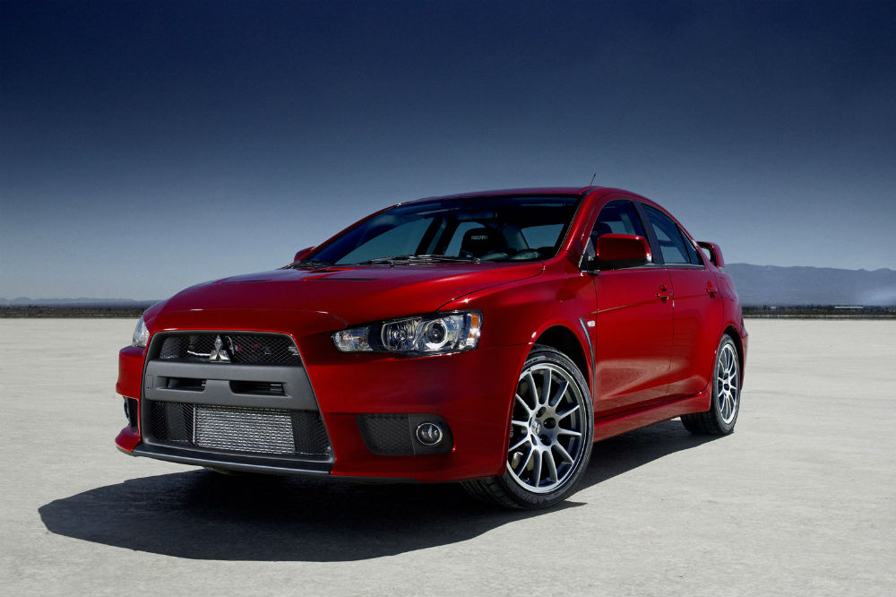

El GT-R R35 es presentado en el Salón de Tokyo 2007 y aunque es fácilmente reconocible como un sucesor del
magnífico R34.
Inicialmente, su tarjeta de presentación era el motor biturbo VR38DETT de 3.8 litros (479 hp y
434 Nm de torque a las cuatro ruedas a través del ATTESA E-TS de última generación, más una transmisión de doble
embrague). Su composición técnica le permite alcanzar los primeros 100 km/h en tan solo 3,8 segundos (utilizando
la función de control de lanzamiento) y alcanzar una velocidad máxima de 313 km/h.Nissan decidió ganarle a
Porsche en Nürburgring y, como era de esperar, lo logró con un tiempo de vuelta de 7:38 minutos frente a los
7:40 del 911 Turbo (997). Coches como el Lexus LFA, el Ferrari 430 Scuderia, el Mercedes-Benz SLR McLaren e
incluso el propio Bugatti Veyron 16.4 han mordido el polvo.
Hablando de evolución, en 2010 el R35 pasó por su
primera gran actualización elevándolo a 523 hp, luego en 2012 llegó a 542 hp, mientras que la versión Nismo (591
hp) fue lanzada en 2014. La última gran actualización llegó en 2016, cuando El motor VR38DETT aumentó a 562 hp.
Acura NSX
En 1990 comenzó su carrera comercial y los premios llegaron poco después: fue elegido "Coche del año" por los
periódicos más prestigiosos, y en 1991 Motor Trend incluso lo reconoció como el "mejor deportivo de todos los
tiempos". Equipado con un motor V6 DOCH VTEC de 2.977 cc con una capacidad de 270 hp a 7100 rpm y 284 Nm a
5400 rpm viene con una transmisión manual de 5 velocidades y tiene la capacidad de acelerar de 0 a 100 km/hr.
en 5,9 segundos y alcanzar una velocidad de 270 km/h.
Luego, en 1992, aparecería el NSX Type R, una edición muy limitada y exclusiva para el mercado nacional con un
total de 483 unidades. La principal diferencia con la versión normal es el menor peso del grupo, que suman un
total de 1.230 kg en una escala menor de 100 kg. No tiene dirección asistida ni aislamiento de ruido, y tiene
una suspensión más rígida, barras estabilizadoras más gruesas, frenos actualizados y relaciones de transmisión
más ajustadas. Cuando finalizó la producción de esta versión en 1995, después de que el modelo fuera reciclado
en 2001, introdujeron el nuevo Model R, muchas de las mejoras se trasladaron al modelo regular.
No fue sino hasta 2001 que el Honda NSX recibió su primer y único lavado de cara. Han desaparecido los
característicos faros retráctiles, y también se ha modificado ligeramente el aspecto del paragolpes. La
suspensión, que fue modificada para la ocasión, tuvo que manejar ruedas y neumáticos más grandes y una
carrocería propuesta en nuevos colores.
Toyota GR supra
El Toyota Supra 2019 comparte plataforma y elementos centrales con el BMW Z4 2019. Al provenir de la marca
japonesa, garantiza que aunque así sea, el Supra tiene una personalidad completamente diferente. De entrada,
solo se ofrecerá con carrocería coupé mientras que el alemán solo está disponible con otra descapotable.
Oficialmente conocido como Toyota GR Supra, acrónimo de Gazoo Racing, la división deportiva y de competición de
la empresa. Estéticamente, se inspira en el Toyota FT-1 Concept, en el sentido de que conserva muchas
características aunque, como es habitual, pierde parte del dinamismo del concepto cuando se convierte en un
coche de producción.
La carrocería mide 4.380 mm de largo, 1.865 mm de ancho, 1.295 mm de alto y 2.470 mm de distancia entre ejes. Si
comparamos el Toyota Supra A80 con el nuevo Supra A90, veremos que el coche recién presentado es unos 134 mm más
corto, 54 mm de ancho, 20 mm más bajo y tiene una distancia entre ejes unos 80 mm más corta. Es decir, es mucho
más corto y más corto.
En la medida en que el Toyota GR Supra 3.0 está equipado con un bloque motor de 340 caballos, puede acelerar de
0 a 100 km/h en 4,3 segundos. Un número que lo convierte en el Toyota de producción en serie que acelera más
rápido de la historia. Por otro lado, la velocidad máxima está limitada electrónicamente a 250 km/h.
En cuanto a las ventajas del Toyota GR Supra 2.0, digamos que de 197 CV puede pasar de 0 a 100 km/h en 6,5
segundos y de 258 CV en 5,2 segundos. Algunas grabaciones son posibles, al menos en parte, gracias al menor peso
de las variantes de cuatro cilindros. Y mientras que el Dam más potente pesa 1.520 kilogramos, sus hermanos más
pequeños aún pesan 1.450 kilogramos (258 hp) y 1.410 kilogramos (197 hp).
Nissan Skyline
Kozo Watanabe, quien diseñó el R33, es responsable del diseño, y el motor no ha sido modificado, usando el mismo
motor biturbo V6 de 2.6 litros con tracción total. Pero los cambios se hicieron con énfasis en el R32, debido a
su configuración conveniente, por lo que se decidió hacerlo más corto en general, al mismo tiempo que se reducía
el pandeo delantero.
Si bien famoso RB26DETT, entregaba los mismos 276 Hp (ya sabemos que en realidad eran más) fue revisado para
mejorar su entrega de potencia y torque, al mismo tiempo que se estrena una transmisión manual de seis
velocidades. El sistema de tracción integral también fue pulido. En el momento del lanzamiento se ofrecieron
seis versiones diferentes del Nissan GT-R R34: el GT-R, el GT-R V.spec, el V.spec II, el V.spec Nur, el GT-R
M-Spec y el GT-R M-Spec Nur.
Pero la joya de la corona llegó en 2005 (tres años después del fin de producción), cuando Nismo, en un
movimiento extraño y poco común en la industria convenció a 20 clientes para que les revendieran sus autos
usados con el único fin de crear una nueva serie llamada Z-Tune, que tras una exhaustiva actualización dio por
resultado una bestia de 500 Hp capaz de acelerar de 0 a 100 km/h en 3.8 segundos y lograr una velocidad máxima
de 326 km/h.
Mitsubishi Lancer Evolution

En 2008 nacía esta última edición que contaba con un diseño totalmente diferente. Su motor, a pesar de mantener
los 2.0 litros, cambiaba radicalmente. Contaba con bloque de aluminio fundido, un corazón que finalmente pasaría
a contar con 300 CV. La marca quiso rendir tributo al modelo con la edición limitada Final Edition, con 307
caballos de potencia y 414 Nm de par. Un coche que murió en el plano comercial pero que nunca se ha ido de la
mente de los apasionados.